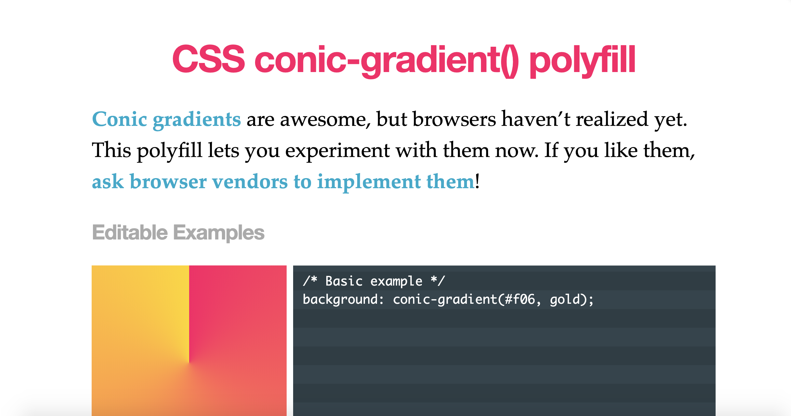

🐰🎩
CSS Houdini: The Magic of Properties, Values, & the Paint API ✨
Want new CSS features?
It's a waiting game...
CSS Standards Process
- Working Draft (WD)
- Candidate Recommendation (CR)
- Proposed Recommendation
- W3C Recommendation (REC)
CSS Houdini
Collection of browser APIs that allows you to gain access to the browsers CSS engine.
CSS Houdini
Collection of browser APIs that allows you to gain access to the browsers CSS engine.
But why...?
Caution! Rant time 😤

Why pure CSS when I have SVG/Image/etc?
Why even CSS Grid? I don't want to write 2 layouts!
Why CSS variables when I have SASS variables?
Because it is all about...
- Pushing boundaries
- Exploration
- Discovering new workflows
- So much more... but that's for you to discover...
Not just about the APIs...
How things are done pre and post Houdini
Not just about the APIs…
🐰🎩
#1 Properties & Values
CSS Variables are cool...
It's dynamic!
body {}
Now you see me~
But it has limitations
.swatch-houdini {
--start: tomato;
--end: deeppink;
width: 860px;
height: 200px;
background-image: linear-gradient(
to bottom, var(--start), var(--end)
);
transition-property: --start, --end;
transition-duration: 1s;
}
.swatch-houdini:hover {
}
.wrapper {
display: flex;
justify-content: center;
align-items: center;
}
No semantic/meaning
Animating gradients right now
Pre-houdini Era
.swatch-pos {
background: linear-gradient(
180deg,
tomato,
deeppink 51%,
blue
) 0 var(--pos-y, 0) / 100% 200%;
height: 200px;
width: 860px;
transition: background-position 1s;
}
.swatch-pos:hover {
--pos-y: 100%;
}
.wrapper {
display: flex;
justify-content: center;
align-items: center;
}
.swatch-opacity {
width: 300px;
height: 200px;
position: relative;
background-image: linear-gradient(
to bottom,
tomato,
deeppink
);
z-index: 1;
}
.swatch-opacity::before {
position: absolute;
content: "";
top: 0;
right: 0;
bottom: 0;
left: 0;
background-image: linear-gradient(
to bottom,
deeppink,
blue
);
z-index: -1;
transition: opacity 0.5s linear;
opacity: 0;
}
.swatch-opacity:hover::before {
opacity: 1;
}
.wrapper {
display: flex;
justify-content: center;
align-items: center;
}
.swatch-opacity-twin {
width: 300px;
height: 200px;
position: absolute;
background-image: linear-gradient(
to bottom,
deeppink,
blue
);
margin-right: 10px;
left: 0;
z-index: 1;
transition: left 1s ease-in-out;
}
.side.clicked .swatch-opacity-twin {
left: 330px;
}
Animating gradients with Houdini
🐰🎩 Properties & Values
CSS.registerProperty({
name: '--start',
syntax: '<color>',
inherits: true,
initialValue: 'purple'
})
Strongly typed CSS 💪
body {
--start: tomato;
--end: deeppink;
width: 860px;
height: 200px;
background-image: linear-gradient(
to bottom, var(--start), var(--end)
);
transition-property: --start, --end;
transition-duration: 1s;
}
body:hover {
--start: deeppink;
--end: blue;
}
Simpler & Maintainable CSS with 🐰🎩
🐰🎩
#2 Typed OM
CSS values as typed JS objects instead of strings
getComputedStyle
getComputedStyle(element).width // 200px (string)
getComputedStyle(element).opacity // 0.5 (string)
computedStyleMap
element.computedStyleMap().get('width')
// getter will return:
// CSSUnitValue {
// value: 50,
// unit: 'percent',
// }
attributeStyleMap
element.attributeStyleMap().set('width', '200px')
element.attributeStyleMap().get('width')
// getter will return:
// CSSUnitValue {
// value: 200,
// unit: 'px',
// }
let square = document.getElementById('square')
let style = getComputedStyle(square)
// console.log(typeof square.computedStyleMap().get('width'))
// console.log(typeof square.computedStyleMap().get('width').value)
// console.log(typeof square.attributeStyleMap().get('width').value)
<div id="square"></div>#square {
width: 200px;
height: 200px;
background: deeppink;
}
Performance benchmarking time!
⚡️⚡️⚡️
let then = performance.now()
let s = document.getElementsByClassName('square')
for (var foo = 0; foo < s.length; foo++) {
// change width of elements here
}
function withoutHoudini(elem) {
let typeConversion = parseInt(getComputedStyle(elem).width)
elem.style.width = typeConversion + 200
}
function withHoudini(elem) {
let value = elem.computedStyleMap().get('width').value
elem.style.width = value + 200
}
let now = performance.now()
//console.log(`${now - then}ms`)
<div id="element"></div>
<script>
let element = document.getElementById('element')
for (var i = 0; i < 1000; i++) {
let squares = document.createElement('div')
squares.classList.add('square')
element.appendChild(squares)
}
</script>
#element {
display: flex;
flex-flow: row wrap;
}
.square {
width: 100px;
height: 100px;
background: deeppink;
margin-bottom: 20px;
margin-right: 10px;
}
🐰🎩❤️⚡️
Better performance with Houdini
🐰🎩
#3 Paint API 🎨
Lets talk about worklets!
- Similar to Web Workers
- No access to global scope items (no setTimouts)
- Only works over HTTPS or localhost
Draw on a canvas that can be used on background images
Create Worklet
registerPaint('feature', class {
paint(ctx, geom, properties) {}
})
Add Worklet to HTML
CSS.paintWorklet.addModule('paint.js')
Use Worklet in CSS
.bg {
background: paint('feature')
}
Conic Gradients
Classic example of polyfilling CSS
.bg {
background: conic-gradient(yellowgreen 40%, gold 0 70%, #f06 0);
}
https://leaverou.github.io/conic-gradient/
Let's create an interesting checkbox!
See the Pen CSS Houdini Checkbox (Full Version) by Aysha Anggraini (@rrenula) on CodePen.
Done in SVG and animated through Javascript
See the Pen CSS Houdini (Worklet & CSS Custom Properties) by Aysha Anggraini (@rrenula) on CodePen.
See the Pen CSS Houdini (Animation with CSS Custom Properties) by Aysha Anggraini (@rrenula) on CodePen.
Variables ❤️ Paint API
Better Code Configurability
👏 👏 👏
- Polyfilling CSS...duh..
- Maintainable CSS
- Better Performance
- Better configurability
- Creative coding opportunities
😞 😞 😞
- Not ready yet
- Browser support
- Learning curve for Paint API (Canvas)
Checking out Layout & Animation Worklet
Exploring Paint API
- Register Custom Properties
- Create your own worklet
- Combine both to produce animation
Is Houdini Ready Yet?
https://ishoudinireadyyet.com/
Will Boyd on Coder's Block
https://codersblock.com/blog/say-hello-to-houdini-and-the-css-paint-api/
Experiments by @iamvdo
https://css-houdini.rocks/
Thank you!
❤️ ❤️ ❤️